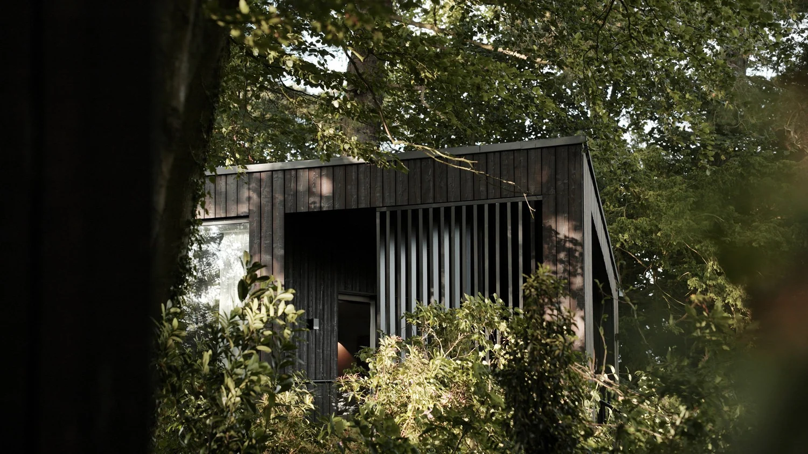
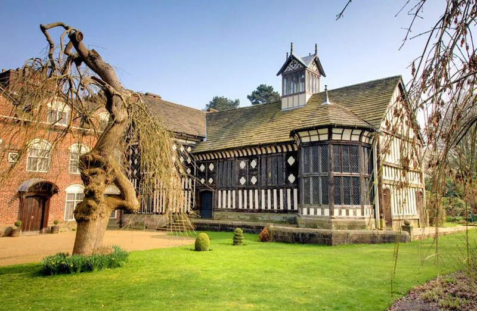
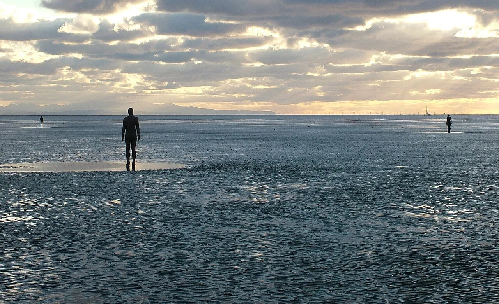

The thirty-kilometre circle
Moor Hall pinned dead-centre. Every entry below sits inside this ring; Manchester, drawn dashed, does not.
A bed, & the cab fare back
Book Moor Hall's rooms first. If they're full, treat the "nearby" lot as a £4.50 taxi — even Birches Brow at 1.6 mi is along unlit country lanes.
Vignettes & stamped views
Every village the lodging research surfaced doubles as a day-trip anchor. The headline pick is Rufford — because Speke Hall's house is shut on Saturdays.





Closed, & closures pending
Three Saturday-killers and one always-shut. Pin them before you book.
Southport Pier has been shut since Dec 2022; repairs run ~14 months from early 2026 — so it stays closed throughout the year [33].
Speke Hall's Tudor house is closed Saturdays in 2026 — only the gardens are open, so it falls to grounds-only on a Moor-Hall day [21].
Southport's Marine Lake Events Centre begins main works later in 2026 — expect hoardings along part of the lakefront [34].
Moor Hall's accommodation shuts 1–17 January and 27 July–16 August every year. Pick a Saturday outside those windows [8].
Tickets, & dates worth shifting for
Inside the 30 km circle, Liverpool carries the calendar. If you can move the dinner to one of these weeks, the trip pulls double duty.
★ Recurring · pick a weekend that overlaps ★
- Dot NET Liverpool — monthly. 1,666 members. Barclays Eagle Lab, Mann Island; or Baltic Ventures, Simpson St [57].
- AI Tinkerers Liverpool — monthly meetup with live code demos; part of a 220-city, 104k-member network [58].
- BCS Merseyside — branch talks across Liverpool, Wirral and South Lancashire [59].
Booking sequence stamped on the file: table → on-site room → fallback cab + B&B. Across four sub-topics, the open gaps that still need a phone call to Moor Hall are the current tasting menu price, the wine pairing, dress code, and whether dinner books bundled with a room [9].
Prices and times are pinned to late-May 2026 and will shift. Trust the link, not the stamp.